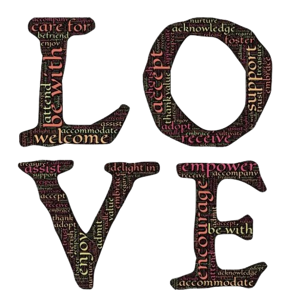

There are many reasons people come to BYU, one of which is to get into a relationship and get married. While this is in fact a school where people come to get majors and learn, some come to find their lover. You’ll meet a ton of people while attending BYU but getting married this young isn’t the best idea. People in Utah get married the youngest compared to all other US states. This isn’t necessarily a bad thing but when compared to divorce rates, getting married younger increases the chance of divorce. BYU students should slow down in their relationships and get married later in their life.
At BYU for 2025 there were around 17% of students that were married. This has fallen a lot since the 2000’s, in that era over half of the student population was married. An internal study on BYU and marriage showed that during the 2000 era an “estimated 63% of males and 55% of female students” were married or got married during their time attending BYU (Chadwick, 2007). It has dropped significantly since then to around 17% of students. In terms of the entire US, BYU is quite the outlier. The national average proportion of undergraduates that graduate married at universities is only 7% (Beard & Langlais, 2018). BYU is over double the nation average. Since BYU’s marriage rate has fallen, leaders of the university and the church wards for the single adults have taken notice and are actively trying to actively do something about it. Shayne Reese, the president of BYU, tells everyone to “embrace the awkward,” and to not fill our time around campus with music and distractives such as phones and social media (Reese et al., 2026). He urges us to create connections instead of isolating, which is great advice. He then applies this to dating and marriage. Telling us how two students bumped into each other, went on a few dates and later got married. Meeting new people is great, this talk has a way of framing it to meet new people to find your partner instead of making new friends.
Since practically everyone is encouraged to search for their eternal companion while attending BYU. It can be tempting to take things fast, find one person you mesh well with and see where it goes from there. Within my first couple of weeks attending BYU as a freshman, I overheard a little part of a conversion from some other freshman. I hope it was satire but you never know. The line was… “I know we’ve only known each other for two weeks, but can we get married in 2 months?” This is crazy to me, a relationship is something that is built. And you know Rome wasn’t built in a day. While I hope things work out for the two people. At BYU there is a giant sense of needing to rush into things like a relationship. Evan, a freshman at BYU, said that he often feels like he is falling behind because he isn’t actively trying to find a relationship. The culture created at BYU seems to pressure people into relationships instead of students choosing themselves when they are ready for one. Heidi Prior, a professor specializing in data analysis at the University of Utah, showed heavy correlation between getting married later in life and the percentage of divorces decreasing according to Utah’s own census data (Prior, 2025). Divorces are needed but if you can avoid marrying someone who will put you in the place where you need a divorce, you should. Taking more time to get to know someone could give you better time to see their flags and how many are green and how many are red. There is a line in Bojack horseman, a show about an old TV star who gives up on making himself better, “when you look at someone through rose-colored glasses, all the red flags just look like flags.” (Bob-Waksberg & Sethi, 2015) This comes from his ex-girlfriend, after they have broken up. She was too busy in the honeymoon phase to see who he truly was. Once she realized who he was, she didn’t want to be with him anymore. Given time she saw the flags and since most of them were red, she left. I encourage you to slow down and take time to get to know the person you are interested in, the real them.
Relationships don’t always end in marriage. They more often than not end up with both parties splitting ways. These break ups can have terrible effects on both parties. A study done on male university students showed that when there was a relationship issue, referring to romantic relationships and not friends, there was an increase in loneliness felt, and “lower levels of positive mental health.” (Sharp, 2023, 1) We have all had someone close to us, become really sad after a relationship has trouble and ends, this is normal. Preventive care can also help avoid these situations. When we rush into things, we can get attached to someone who was never compatible for us, and cause these feelings to happen. If we just slowed down in our journey, we could have prevented it from going further and stayed friends, strangers, acquaintances, or whatever the relationship was previously.
College is a great place to meet new people, make connections, and date around. You should meet people and accept the love given and give love to everyone. When a relationship inevitably comes your way, it is so so so important to go slow and think about what you want, where things are headed, and where you can go from here. This will leave everyone involved in a healthier state and could even help the relationship be healthier and more stable.
While I was working on this project, I found being inspired by "The art of loving" a book by Erich Fromm and "The art of loving" Olivia Dean's album.
I am a freshman at BYU, studying chemical engineering. I grew up in Utah, and around the very LDS thing of getting married quickly and young. I love playing Guitar and writing music. I have 3 siblings that live all throughout Utah.
I want to leave with the saying I have made during my first semester at BYU:
Beard, S., & Langlais, M. (2018, 10 30). Saying “I Do” in College: Examining Marital Status and Academic Performance. CCSE. https://www.ccsenet.org/journal/index.php/ijps/article/view/0/37274
Bob-Waksberg, R., & Sethi, M. (Writers). (2015). Yes And (J. Gonzalez, Director) (Season 2, Episode 10) [TV series episode]. In BoJack Horseman.
Chadwick, B. A. (2007). A Survey of Dating and Marriage at BYU. BYU Studies. Retrieved November 16, 2026, from https://byustudies.byu.edu/article/a-survey-of-dating-and-marriage-at-byu
Prior, H. (2025, April). Utah's Marriage Trends: Young, Married, and Changing - Kem C. Gardner Policy Institute. Kem C. Gardner Policy Institute. Retrieved November 16, 2026, from https://gardner.utah.edu/news/utahs-marriage-trends-young-married-and-changing/
Reese, S., Soares, U., & Gong, G. W. (2026, 9). In Appreciation of Friction: Embracing the Awkward. BYU Speeches. Retrieved November 17, 2026, from https://speeches.byu.edu/talks/c-shane-reese/in-appreciation-of-friction-embracing-the-awkward/
Sharp, P. (2023). Romantic relationship challenges and young men’s mental health in Canadian-based undergraduate university students. American College Health, 73(10). https://www.tandfonline.com/doi/full/10.1080/07448481.2025.2472196